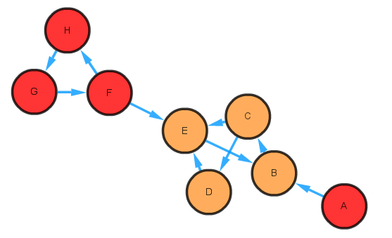

Modules
Table of contents
- Functional annotations
- Pathway complementarity
- Seed scores based on genome-scale draft reconstructions (GEMs)
- References
microbetag gets as input either a co-occurrence network or an abundance table where either Silva or GTDB taxonomies have been used. When an abundance table is provided, microbetag firsts builds a co-occurrence network using FlashWeave [1].
Once a network is availalbe, microbetag identifies the taxonomic level that has been assigned to each entry, for example D_0__Bacteria; D_1__Firmicutes; D_2__Clostridia; D_3__Clostridiales; D_4__Ruminococcaceae; D_5__uncultured; D_6__uncultured rumen bacterium has reached the family level, while D_0__Bacteria; D_1__Actinobacteria; D_2__Coriobacteriia; D_3__Coriobacteriales; D_4__Coriobacteriaceae; D_5__Collinsella; D_6__uncultured bacterium is at the genus level and proceeds with the network annotation.
The network annotation consists of 4 major modules:
- literature oriented taxa functional annotation using FAPROTAX [2]
- genomic oriented taxa functional annotation using an updated, local instance of phenDB using all representative genomes of GTDB and
phenotrex - pathway complementarity annotations between taxa that have been found co-correlated in the produced (or user provided) network; both taxa were considered as potential donor and beneficiary (see Pathway complementarity for more)
- complementarity [3] and competition [4] seed scores between draft metabolic reconstructions of GTDB representative genomes, mapped to the input taxa using PhyloMInt (see Seed-based complementarity and competition scores for more)
Nodes that have species or strain taxonomic annotation are mapped to their closest representative GTDB genomes and based on those, they get phenDB-like and FAPROTAX functional annotations. Taxa (nodes) that have been taxonomically annotated at the family or order level are annotated using FAPROTAX.
Edges linking nodes that have been taxonomically assigned at the species or strain level, i.e. both nodes of the association have a species/strain taxonomic annotation, are annotated using the pathway complementarity and the seed scores approaches.
Below, you will find further background and examples of each annotation type.
Functional annotations
Based on FAPROTAX
FAPROTAX [2] maps taxa (e.g. genera or species) to metabolic or other ecologically relevant functions based on the literature for cultured representatives. It currently comprises more than 7600 annotation rules, covering ~4700 prokaryotic clades. Each annotation rule comes with literature citations and can, thus, be independently verified. Similar 16S rRNA oriented approaches (e.g., PICRUSt, Tax4Fun etc.) estimate community gene content based on available sequenced genomes. On the contrary, FAPROTAX estimates metabolic phenotypes based on experimental evidence.
The taxonomy assigned to each OTU/ASV (amplicon data) or bin (shotgun data) on the abundance table provided by the user, is mapped to a list of functions one can check here.
As an example, here is how the FAPROTAX output looks like for the denitrification function for three samples (columns):

FAPROTAX returns only the ASVs present in the (user provided) abundance table that are related to the denetrification function. Numbers represent the ASV abundance in each sample.
microbetag runs FAPROTAX agains the abundance table and parses the subtables (seqId_faprotax_functions_assignment) to annotate each node with the corresponding function.
In case the user provides as input a co-occurrence network, microbetag runs FAPROTAX against the nodes.
Based on phenDB
phenotrex enables phenotypic trait prediction on user’s metagenomic genomes/bins.
Phenotrex classifiers were re-trained using the genomes provided by phenDB for each model. For example, for the acetic acid production case, the corresponding webpage of phenDB pointed to the set of genomes that had been originally used. These genomes were recovered and the classifiers were re-trained to sync with the latest version of eggNOG.
Under the Traits predicted based on phenDB models tab, we provide a description of each feature abbreviation returned from microbetag based on phen feautures, based on those from the phenDB group.
The annotation is referring to the species under study. Each trait gets a “Yes” or “No” decision along with an accurracy score. For example NOB : species under study is part of the clade of NOB.
Here is an example of how two GTDB genomes look like:

microbetag annotates all network nodes (corresponding to OTUs/ASVs/bins that have been identified to species/strain level) mapped to a representative GTDB genome with these functional traits and scores.
Pathway complementarity
As defined by the KEGG resource, “the KEGG MODULE database is a manually curated collection of modular functional units, categorized into pathway modules, signature modules and reaction modules”.
All the GTDB representative genomes were KEGG annottated. Considering all pair-wised combinatons of those genomes, microbetag checks whether the KEGG Orthology (KO) terms of a genome (donor) could complete a KEGG module of another (beneficary), if shared.
Here is an example where Acidiferrobacter sp. SPIII3 (GCA_003184265.1) potentially shares K01626 to complete the Shikimate pathway (M00022) of Prochlorococcus marinus AS9601 (GCA_000015645.1).

As several genomes can be mapped to the same NCBI Taxonomy id, microbetag returns all possible complementarities between all the donor’s and the beneficary’s genomes.
microbetag annotates all edges where both nodes represent species/strain level taxonomies with such complementarities.
Seed scores based on genome-scale draft reconstructions (GEMs)
Based on Borenstein et al. (2008) [5] a metabolic network’s “seed set” is the set of compounds that, based on the network topology, are exogenously acquired”. Here is an example (based on the Borensteil lab webpage):

Node A is a seed, as it cannot be activated by any other node in the network. Nodes F, G, and H are also seeds but they are interdependent, i.e. activating one of these nodes would activate the rest, but at least one must be active to activate the rest. These nodes form a “seed group”. To quantify the relevance of each identified seed, we assign each seed a confidence level (C), ranging from 0 to 1. A confidence level of 0 would correspond to a non-seed node, while a 1 would correspond to a seed that cannot be activated by another node. Seeds which belong to a seed group with more than 1 seed are given a fractional confidence level, the inverse of the number of seeds in the group.
Based on the seed concept, several scores between metabolic models of pair of species have been described. As described in the PhyloMInt paper: the Metabolic Complementarity Index (\(MI_{Complementarity}\)) is calculated as the “fraction of the seed set of the genome-scale reconstruction of species A, that is found within B’s metabolic network but not part of B’s seed set, normalized by the number of A’s seed set in B’s entire metabolic network”. This complementarity score represents the potential for A’s to utilize the potential metabolic output of B.
\[MI_{Complementarity} = \frac {\lvert SeedSetA \cap \neg SeedSetB \rvert} { SeedSetA \cap (SeedSetB \cup \neg SeeedSetB)}\]Similarly, as described in the PhyloMInt paper, the Metabolic Competition Index (\(MI_{Competition}\)) “is calculated as the fraction of A’s seed set that is also in B’s seed set, normalized by the weighted sum of the confidence score”. MIC estimates the baseline metabolic overlap between two given metabolic networks.
\[MI_{Competition} = \frac {\sum C( SeedSetA \cap SeedSetB )} {\sum C(SeedSetA)}\]Here is a toy example to calculate the two indices as shown in the PhyloMInt paper:
 In a comparison between metabolic network A versus metabolic network B, metabolic network A shares only one seed metabolite with metabolic network B (metabolite F) which lies in the seed group in metabolic network A. Thus, the \(MI_{Competition}\) between metabolic network A and B is \((1/3) / 2 = 1/6\).
In a comparison between metabolic network A versus metabolic network B, metabolic network A shares only one seed metabolite with metabolic network B (metabolite F) which lies in the seed group in metabolic network A. Thus, the \(MI_{Competition}\) between metabolic network A and B is \((1/3) / 2 = 1/6\).
The \(1/3\) term represents the confidence level of the seed group node.
Among SeedSetA, metabolites A and F are found within the metabolic network B but only metabolite A is within non-SeedSetB, thus the MIComplementarity index between metabolic network A and metabolic network B is 0.5.
These indexes can be used in various types of metabolic networks. In the framework of microbetag, all GTDB representative genomes were used to come up with draft genome-scale reconstructions using modelseedpy with its default gapfilling algorithm and a complete medium. Then, all GEMs pair-wised combinations were considered and using PhyloMInt their \(MI_{Complementarity}\) and \(MI_{Competition}\) scores were calculated. microbetag annotates all edges between species/strain level taxonomically assigned nodes with such scores, considering all the representative GTDB genomes mapping to the corresponding NCBI Taxonomy ids of the nodes.
References
[1] Tackmann, J., Rodrigues, J.F.M. and von Mering, C., 2019. Rapid inference of direct interactions in large-scale ecological networks from heterogeneous microbial sequencing data. Cell systems, 9(3), pp.286-296, DOI: 10.1016/j.cels.2019.08.002.
[2] Louca, S., Parfrey, L.W., Doebeli, M. (2016) - Decoupling function and taxonomy in the global ocean microbiome. Science 353:1272-1277, DOI: 10.1126/science.aaf4507.
[3] Levy, R., Carr, R., Kreimer, A., Freilich, S., Borenstein, E. “NetCooperate: a network-based tool for inferring host-microbe and microbe-microbe cooperation.” BMC Bioinformatics, 2015.
[4] Kreimer, A., Doron-Faigenboim, A., Borenstein, E., Freilich, S. “NetCmpt: a network-based tool for calculating the metabolic competition between bacterial species.” Bioinformatics, 2012.
[5] Borenstein, E., Kupiec, M., Feldman, M.W. and Ruppin, E., 2008. Large-scale reconstruction and phylogenetic analysis of metabolic environments. Proceedings of the National Academy of Sciences, 105(38), pp.14482-14487.